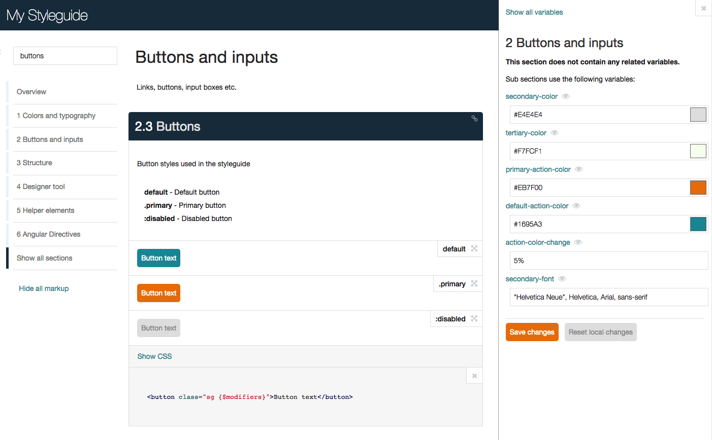

SC5 Style Guide Generator
Informative and easily navigable live style guide which can be edited directly in the browser

Try online demo
Easily view, search and test your styles with the AngularJS powered UI.
The enhanced KSS processing flow knows which styles and variables are related to the current component, allowing you to see all the related things in one place.
With the designer tool you can edit SASS or LESS variables directly via the web interface. All changes can be saved back to the original file.
All modifications are automatically updated and applied via web sockets on every device without reloading while you are editing. You will be notified of compilation errors too.
HTML markup sections defined in the KSS blocks are dynamically compiled thus it is possibly to use Angular directive inside the style guide.
All components are wrapped with the Shadow DOM providing full style encapsulation. User defined styles do not leak outside the component container.
# Try the styleguide generated
# from the styleguide itself
› npm install sc5-styleguide
› cd node_modules/sc5-styleguide
› npm run demo
# Open http://localhost:3000
Get started with using SC5 Style Guide Generator as a command line tool or as gulp/grunt plugin
View on Github